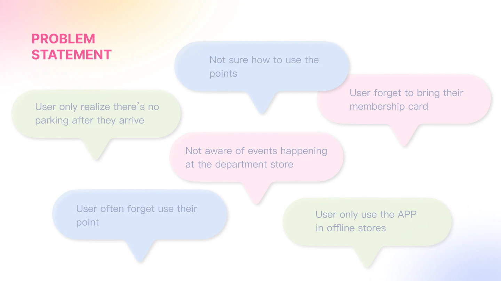
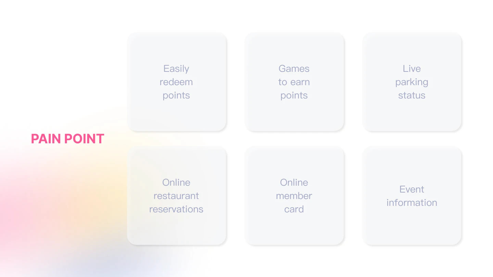
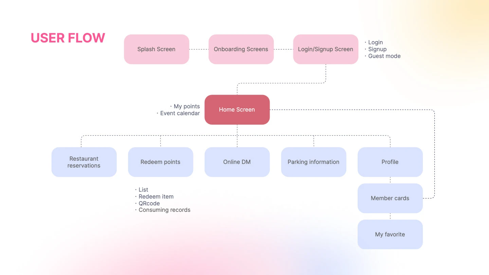
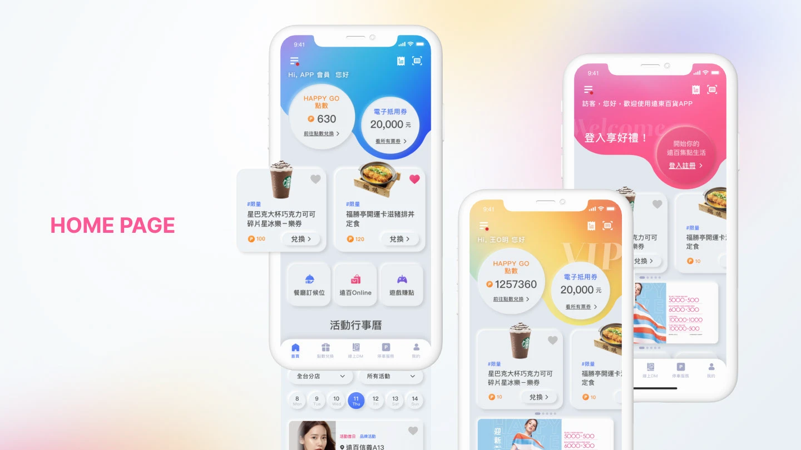
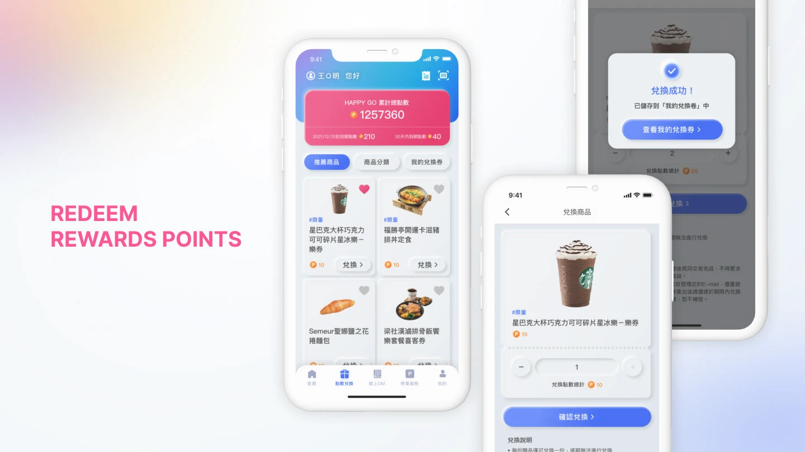
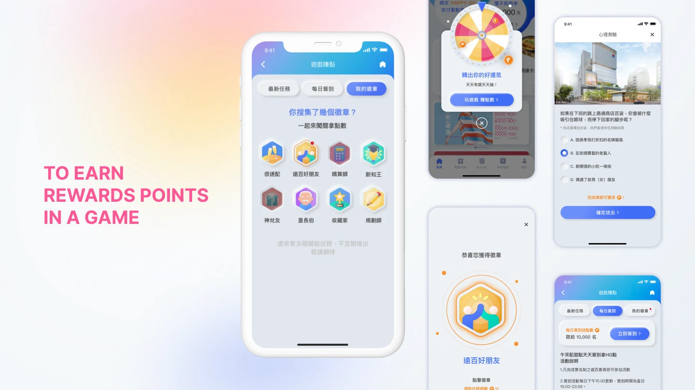
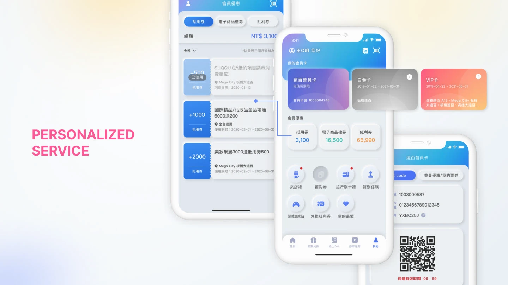
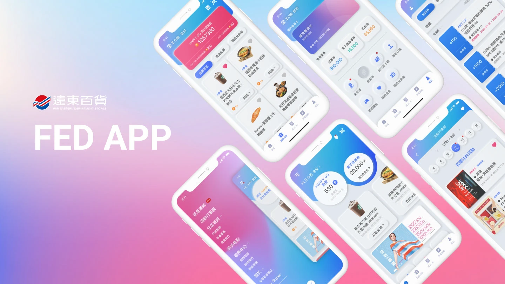

Case Study — 01
A redesign of Far Eastern Department Store's app — a faster redemption flow, gamified point-earning, membership card integration, and a more premium visual language.
01 — Challenge
The existing Fed APP had a fragmented experience — points redemption took several steps, membership cards were buried in settings, and the visuals felt dated next to competitors. Drop-off during redemption was high, and returning users struggled to understand the value of their accumulated points.



02 — Process
I interviewed 12 loyal members and ran a competitive analysis of 5 retail loyalty apps. The key insight: users want to feel rewarded immediately, and the existing 3-step redemption flow undercut that. Using JTBD, I reframed each touchpoint around the task the user was actually trying to complete.
User interviews conducted
Competitor apps audited
Redemption steps reduced





03 — Results
After launch, engagement and conversion both improved. The gamified earning mechanics drove daily active use, the streamlined redemption flow reduced support tickets related to points confusion, and the refreshed visual language aligned with the brand's premium retail positioning.